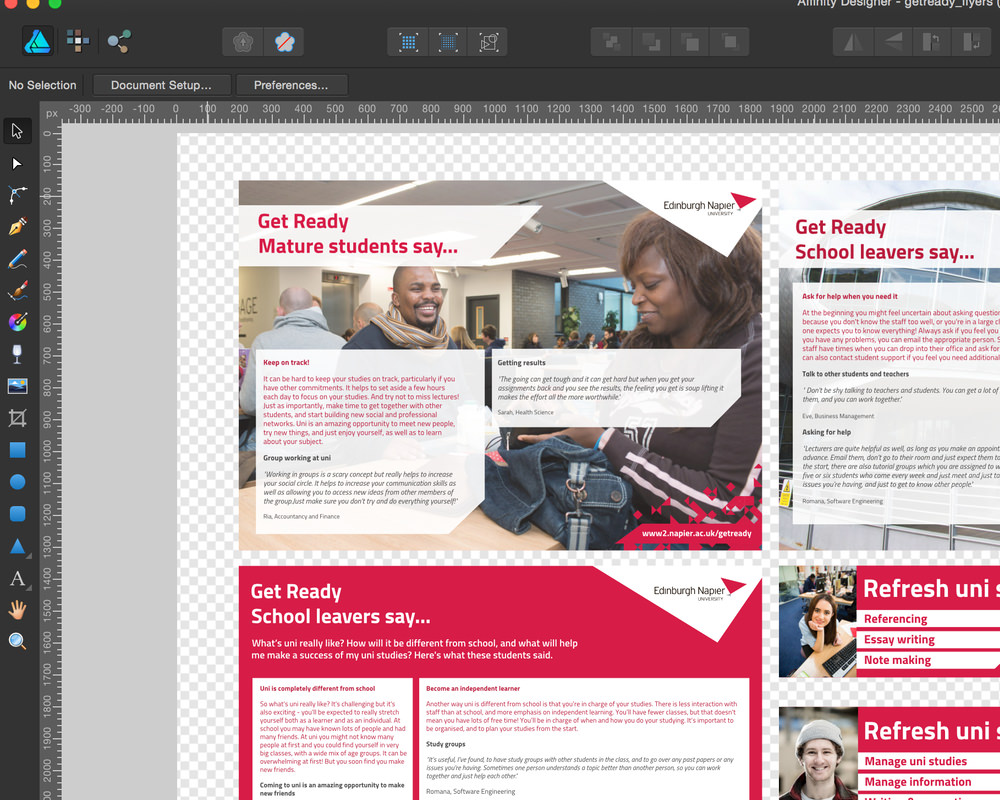
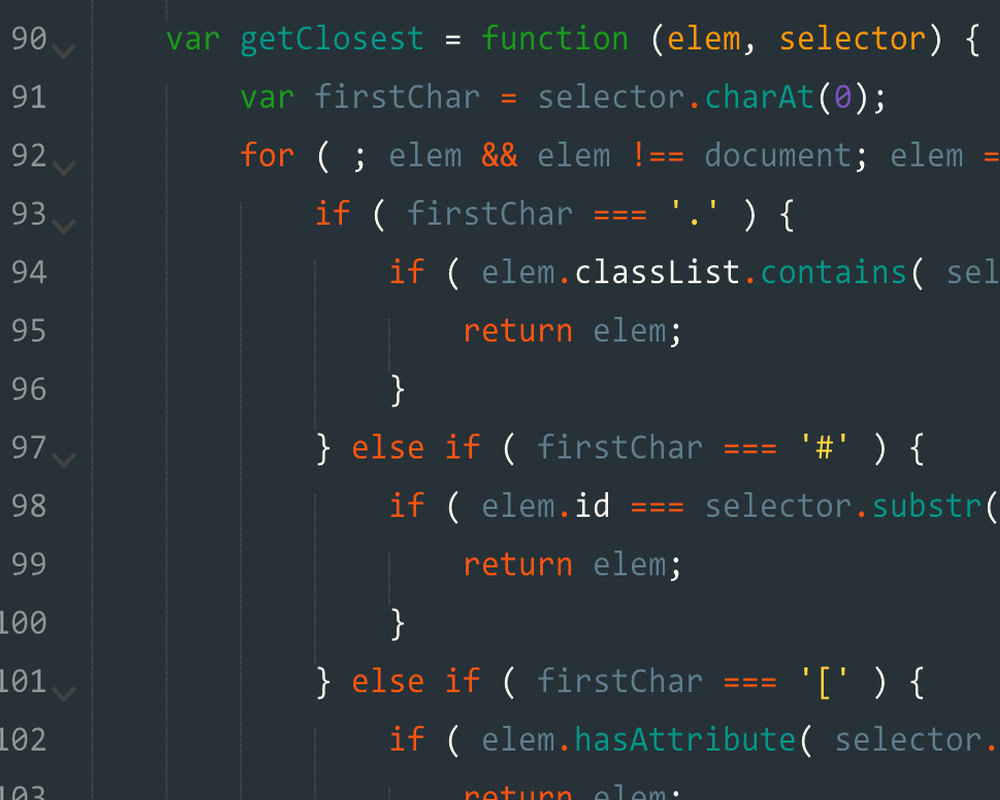

My Workflow
When designing the early stages of a project I like to work in any modern vector/image editing software from Photoshop to Sketch 3 or Affinity Designer. I plan and develop wireframes, templates and timelines ensuring a complete overview of the project for by both myself and the client(s)
When developing a site I use either Bootstrap 3 or Skel Frameworks, ensuring a consistent responsive design flow across all device sizes. My main languages are HTML5, CSS3, Sass and Javascript/Jquery. I also use Git for source control.
Design
Development
Hi I'm John
I'm a passionate Front-End Developer from Ireland with a penchant for clean, easy to read and functional code. I graduated with a distinction profile BSc in Web Design & Development in May 2015, from Edinburgh Napier University. I strive to improve myself with each new opportunity I am a part of. The process of creation is what drives me.
I'm currently in Dubai, UAE looking for work.